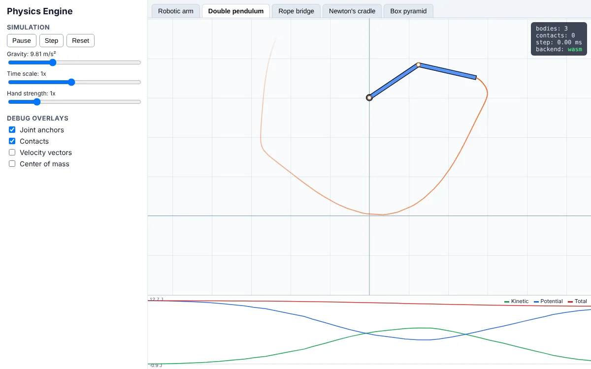
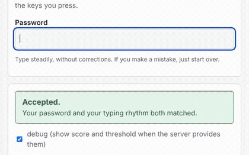
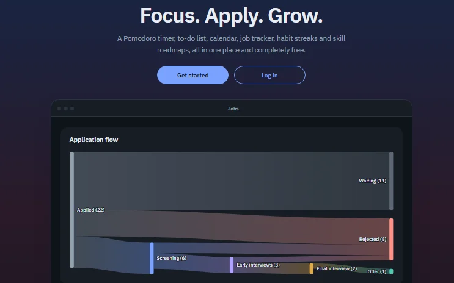

Physics Engine
A 2D rigid-body physics engine written in C++17 and compiled to WebAssembly, with an interactive demo that runs in your browser. Drag a robotic arm, a double pendulum, Newton's cradle or a rope bridge.
Selected work
Things I've designed, built and learned from.

A 2D rigid-body physics engine written in C++17 and compiled to WebAssembly, with an interactive demo that runs in your browser. Drag a robotic arm, a double pendulum, Newton's cradle or a rope bridge.

A keystroke-dynamics biometric: it learns how you type your password and checks that rhythm at login, as a second factor. Evaluated on the CMU benchmark, where it roughly ties classic detectors.

A productivity app for learning, with a Pomodoro timer, an internship tracker, a daily habits tracker and a skills roadmap.